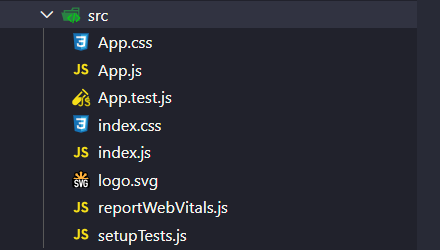

Voltar
Criando um projeto React
CRA (Create React App)
É uma ferramente que nos ajuda a criar um projeto react, essa ferramente foi criada também pela facebook
Este link nos manda direto para o passo a passo: Clique aqui
Passo 1
Passo 1.1
Precisamos colocar esse comando no prompt de comandos que está sendo usado: npx create-react-app my-app
Esse nome vermelho "my-app" é na verdade o nome do
aplicativo REACT, ou seja, pode ser qualquer outro nome
Passo 1.2
Precisamos entrar na nova pasta que será criada, que terá o nome do App React, no nosso caso "my-app"
E para entrar nela usamos o comando: cd my-app
Passo 1.3
Depois de entrar no nosso projeto já criado, basta roda-lo com o comando: npm start

Projeto criado

Arquivos que o Create React criou pra gente
Temos a node modules com 870 pastas, que comporta todos os arquivos necessários para o funcionamento do nosso projeto
Temos a pasta Public que comporta os seguintes arquivos:
- Favicon.ico ⇒ É a pequena imagem que aparece na aba do navegador ao lado do título da página e é exibida nos marcadores (favoritos) quando alguém salva o site. O termo "favicon" é uma abreviação de "favorite icon". Ele ajuda os usuários a identificar rapidamente o site entre várias abas abertas no navegador e também facilita o reconhecimento do site quando é salvo nos favoritos.
- index.html ⇒ É o ponto de entrada principal de uma aplicação web. É um arquivo HTML que geralmente está localizado na raiz do diretório do projeto. Quando alguém visita um site, o navegador procura pelo arquivo index.html automaticamente, a menos que seja especificado de outra forma na configuração do servidor.
- logo192.png ⇒ são imagens de amostração do React
- logo192.png ⇒ são imagens de amostração do React
- manifest.json ⇒ É um arquivo de configuração usado principalmente em aplicações web progressivas (Progressive Web Apps, ou PWAs). Esse arquivo contém metadados sobre o aplicativo, como o nome, a descrição, os ícones, as cores e outros parâmetros que ajudam na integração do aplicativo com o dispositivo do usuário e melhoram a experiência de uso
- robots.txt ⇒ É um arquivo de texto simples usado para fornecer instruções aos motores de busca sobre quais partes do site devem ser rastreadas ou ignoradas. Ele é colocado na raiz do diretório do site para que os motores de busca possam facilmente encontrá-lo.
Pasta SRC

- App.css ⇒ É geralmente usado para armazenar estilos globais que se aplicam a toda a aplicação. Quando você inicia um novo projeto React usando ferramentas como Create React App, um arquivo chamado App.css pode ser fornecido como parte da estrutura inicial do projeto.
- App.js ⇒ É um dos componentes principais da aplicação. Ele geralmente atua como o componente raiz que engloba toda a estrutura da aplicação e pode conter outros componentes e lógica necessária para a renderização da interface do usuário.
- App.test.js ⇒ É um dos componentes principais da aplicação. Ele geralmente atua como o componente raiz que engloba toda a estrutura da aplicação e pode conter outros componentes e lógica necessária para a renderização da interface do usuário.
- index.css ⇒ É geralmente utilizado para definir estilos globais que serão aplicados em toda a aplicação. Esse arquivo de estilos é normalmente importado no arquivo index.js ou index.tsx (dependendo se você está utilizando JavaScript ou TypeScript), que é o ponto de entrada da aplicação React.
- index.js ⇒ O arquivo index.js (ou index.tsx se você estiver usando TypeScript) é o ponto de entrada principal da aplicação. Esse arquivo é responsável por inicializar a aplicação React e renderizá-la no DOM (Document Object Model) da página HTML.
- logo.svg ⇒ É a logo de demostração padrão dop React
- reportWebVitals.js ⇒ O arquivo reportWebVitals.js é um utilitário opcional que facilita a medição e o monitoramento do desempenho da aplicação. Ele é usado para coletar métricas vitais da web, como o tempo de carregamento da página, a latência de interações do usuário e outras métricas de performance importantes.
- setupTests.js ⇒ O arquivo setupTests.js é utilizado para configurar o ambiente de teste. Ele é executado automaticamente antes de qualquer teste, permitindo que você configure globalmente certas opções ou inicialize bibliotecas de teste.
Temos o arquivo .gitgnore
Temos o arquivo package-lock.json e package.json

De fato não precisamos de todos os Arquivos
Lista do que será deletado, que não é escencial:
- logo192.png
- logo512.png
- manifest.json
- robots.txt
- App.css
- App.teste.js
- index.css
- logo.svg
- reportWebVitals.js
- setupTests.js
No final, ficará assim:
Antes de ir para o projeto precisamos ajeitar algumas coisas mais:
-
INDEX.HTML
Dentro desse arquivo terá essa linha de código: <link rel="manifest" href="%PUBLIC_URL%/manifest.json" />

Precisamos apaga-la
-
APP.JS
Apageremos todo o conteúdo desse arquivo
-
INDEX.JS
Vamos apagar algumas linhas de código para deixar apenas o necessário
Ficará assim:
Pronto
Feito tudo isso, nosso projeto está pronto para começar atrabalhar nele